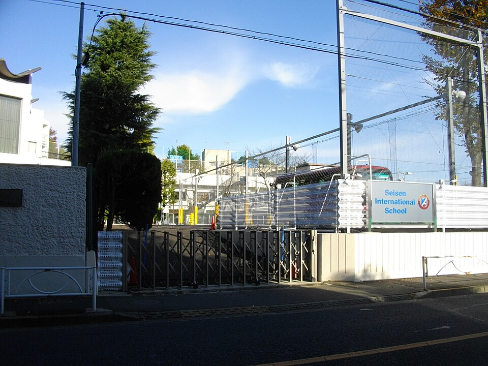

세이센 인터내셔널 스쿨 정문(도쿄 세타가야) · 사진: Abasaa / Wikimedia Commons, Public domain
세이센 인터내셔널 스쿨(Seisen International School) — 12년을 한 곳에서 다니는 학교
1. 세이센 인터내셔널 스쿨은 어떤 학교인가
· 설립 — 1962년, 예수성심시녀회(Handmaids of the Sacred Heart of Jesus)가 세운 것으로 알려져 있습니다.
· 위치 — 도쿄 세타가야구(世田谷区). 도심 주거지역에 있는 통학형 학교로 알려져 있습니다.
· 성격 — 가톨릭 미션스쿨이며, 초등 저학년 일부를 제외하면 여학생을 받는 여학교로 알려져 있습니다.
· 학년 — 유치원부터 G12까지 한 학교에서 이어지는 것으로 알려져 있습니다.
· 교육과정 — 고등 과정에서 IB 디플로마 프로그램(DP)을 운영하는 것으로 알려져 있습니다. 1985년 일본에서 여학교로는 처음 IB 디플로마를 도입한 것으로 알려져 있습니다.
· 구성 — 여러 국적의 학생이 함께 다니는 다국적 구성으로 알려져 있습니다.
※ 학비·정원·합격률·재학생 수 등 해마다 바뀌는 수치는 이 글에서 다루지 않습니다. 학년별 남녀 구성과 모집 요건도 학교 방침에 따라 달라질 수 있으니 학교 요강을 직접 확인하세요.
2. 핵심 — "학교를 다시 찾지 않아도 된다"는 것의 값
주재원 가정에서 의외로 크게 작용하는 변수입니다. 도쿄의 국제학교 중에는 중등에서 끝나는 곳이 있습니다. 예를 들어 니시마치 인터내셔널 스쿨은 G9까지로 알려져 있어, 그 뒤 고등학교를 다시 지원해야 합니다. 세이센은 유치원부터 G12까지 이어지는 것으로 알려져 있어 그 과정이 없습니다.
| 항목 | 세이센 | ASIJ | 니시마치 |
|---|---|---|---|
| 계열 | IB(가톨릭) | 미국식 | 국제·이중언어 |
| 고등 마무리 | IB 디플로마 | 미국식 졸업장 · AP | G9까지 |
| 성별 | 여학교 | 남녀공학 | 남녀공학 |
| 학교를 다시 찾나 | 아니오 | 아니오 | 예(고등) |
※ 각 학교의 학년 범위·개설 과정은 해마다 바뀔 수 있습니다. 지원 전 각 학교 요강을 직접 확인하세요.
표를 "어디가 좋냐"로 읽지 마시고 "우리 아이의 주재 기간이 얼마나 되느냐"로 읽으셔야 합니다. 주재가 길어질 가능성이 있고 딸이 초등 저학년이라면, 중간에 한 번 더 입시를 치르지 않는 구조가 실제로 큰 이점입니다. 반대로 주재가 3년 안쪽으로 정해져 있고 미국 대학으로 돌아갈 계획이라면 미국식·AP 쪽이 성적 환산에서 더 단순합니다. → 입학 준비 총정리
3. 한국(주재원) 학생이 겪는 어려움
· IB는 "정답"이 아니라 "논거"를 채점한다. 한국에서 오래 공부한 학생이 가장 크게 부딪히는 벽입니다. 맞는 답을 썼는데도 점수가 낮으면, 대개 근거를 들고 그것이 무엇을 뜻하는지 쓰는 문장이 빠져 있습니다. → IB DP 점수 완전정복
· DP 6과목과 HL·SL을 G10 말에 정해야 한다. 특히 수학 AA와 AI는 되돌리기 어려운 선택입니다. 대학 전공에 따라 요구가 갈리므로 전공에서 거꾸로 내려와야 합니다.
· DP 밖의 세 가지가 따로 시간을 먹는다. 소논문(EE)·지식이론(TOK)·CAS는 성적표의 과목 점수와 별개로 진행되는데, 한국 가정에서는 "수업 외 활동" 정도로 가볍게 보다가 G12에 몰리는 경우가 많습니다.
· 일본에 살지만 일본 입시와 무관하다. 도쿄에 계셔도 이 학교의 진학 준비는 EJU·일본 대학 입시와는 다른 길입니다. 일본 대학도 함께 보실 계획이면 그건 별도로 준비해야 합니다. → 일본 JLPT·EJU 안내
· 영어로 된 수학. 계산은 되는데 알지브라 용어가 영어이고, 서술형에서 풀이 과정을 영어 문장으로 적어야 단계 점수를 받습니다.
· 여학교 환경. 장점도 단점도 아이 성향에 달려 있습니다. 소규모 환경에서 발표 기회가 많다는 점은 대체로 유리하게 작용하지만, 전학 시기에 따라 이미 형성된 관계에 들어가는 부담이 있을 수 있습니다.
4. 그래서 이렇게 준비합니다
📖 영어과외 — 읽는 영어에서 "분석하는 영어"로
IB에서 점수를 가르는 건 어휘량이 아니라 구조입니다. 주장 → 근거 → 분석의 뼈대를 세우고, 특히 마지막 분석 문장(이 자료가 왜 내 주장을 뒷받침하는가)을 쓰는 훈련에 시간을 씁니다. 이 훈련은 그대로 EE(소논문)와 TOK 에세이로 이어집니다. (영어 공부법 참고)
📐 수학과외 — AA·AI 선택부터 거꾸로
알지브라·지오메트리 개념을 한국식 풀이와 영어 용어로 연결하고, 풀이를 영어 문장으로 적는 습관을 들입니다. 그 위에서 수학 AA(이론·증명 중심)와 AI(활용·자료 중심) 중 어느 쪽이 아이의 전공 방향에 맞는지를 G10 안에 정리해 둡니다. (알지브라 공부법 참고)
🗓️ EE·TOK·CAS — G11에 나눠 놓기
이 세 가지는 미루면 반드시 G12에 몰립니다. EE 주제를 G11 상반기에 정해 두고, TOK 에세이는 수업에서 다룬 질문 중 마음에 드는 것을 메모해 두는 정도만으로도 뒤가 훨씬 가벼워집니다.
🗺️ 편입 시기별 우선순위
· 유치원~G5 편입 — 읽기 레벨과 말하기. 수업 참여가 곧 평가입니다.
· G6~G9 편입 — 가장 여유 있는 시기입니다. 학습영어를 올리고 잘하는 과목을 찾아두는 기간으로 쓰세요.
· G10 편입 — DP 6과목 조합과 수학 AA·AI부터 함께 봅니다.
· G11 이후 편입 — 남은 기간, EE·TOK 일정, 대학 지원 일정을 먼저 표로 그리고 시작하세요.
5. 도쿄의 강점 — 시차 없는 화상과외
일본은 한국과 시차가 없습니다. 도쿄 오후 5시가 한국 오후 5시라, 방과 후 시간이 그대로 한국 강사진의 수업 시간과 맞습니다. 도쿄에는 한국 학생을 위한 학원이 있지만 대부분 일본 대학 입시나 회화 중심이라, IB 기준표 채점과 영어 에세이 구조를 한국어로 짚어 줄 곳을 찾기가 쉽지 않습니다. 아이의 실제 과제와 채점된 기준표를 화면에 놓고 "어느 항목에서 깎였는지"부터 보는 방식이 가장 빠릅니다. 도쿄 지역 사정은 도쿄 국제학교 수학·영어 과외에 정리해 두었습니다.
정리
세이센 인터내셔널 스쿨은 1962년 설립으로 알려진 도쿄 세타가야의 가톨릭 여학교이고, 유치원부터 G12까지 한 학교에서 이어지며 고등 과정은 IB 디플로마로 마무리하는 것으로 알려져 있습니다. 이 학교를 고를 때 기준은 명성보다 두 가지입니다. ① 주재 기간이 길어질 수 있다면 중간에 학교를 다시 찾지 않아도 되는 구조가 크게 유리합니다. ② 고등이 IB이므로 준비는 G10의 과목 선택과 분석하는 영어에서 시작합니다. 30분 무료 상담으로 우리 아이의 지금 지점을 함께 짚어 보세요.